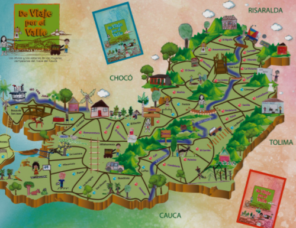

VALLE

Es uno de los treinta y dos departamentos que, junto con Bogotá, Distrito Capital, forman la República de Colombia. Su capital es Cali. Está ubicado en las regiones Andina y del Pacífico, limitando al norte con Chocó y Risaralda, al este con Quindío4 y Tolima, al sur con Cauca y al oeste con Chocó y el océano Pacífico. Con 4 600 000 habs. en 2015 es el segundo departamento más poblado —tras Antioquia— y con 208 hab/km², el quinto más densamente poblado, por detrás de San Andrés y Providencia, Atlántico, Quindío y Risaralda. Tiene bajo su jurisdicción la Isla de Malpelo.3 El Valle del Cauca se constituyó tras la unión de los departamentos de Cali y Buga, los cuales elevaron su solicitud de establecimiento ante el congreso bajo el decreto N.º 340 del 16 de abril de 1910, durante la presidencia de Ramón González Valencia. Se estableció como capital Cali y como primer gobernador fue nombrado Pablo Borrero Ayerbe.